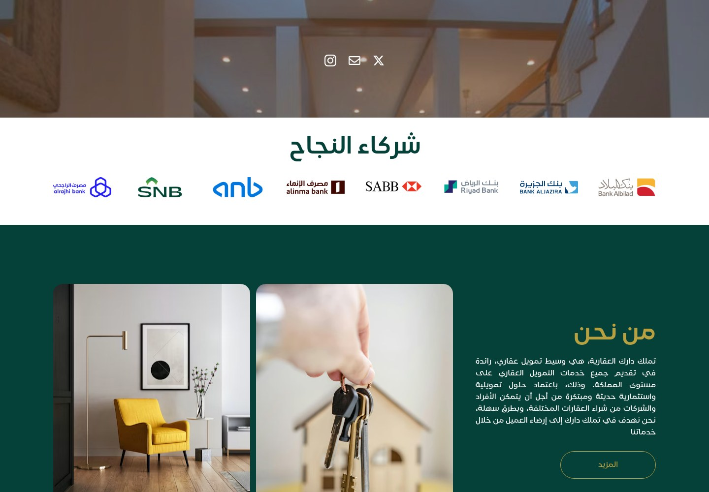
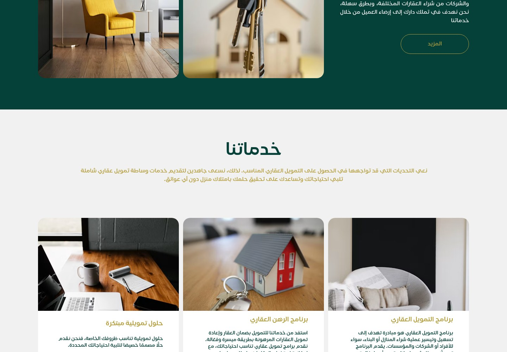
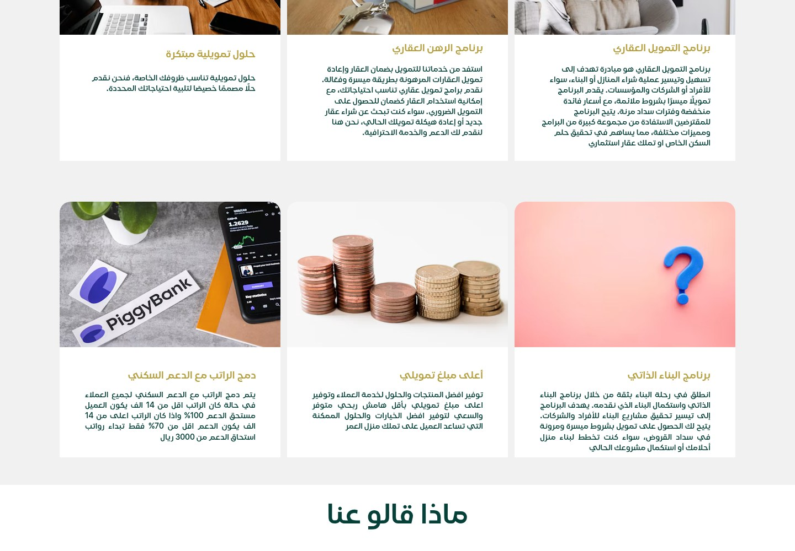
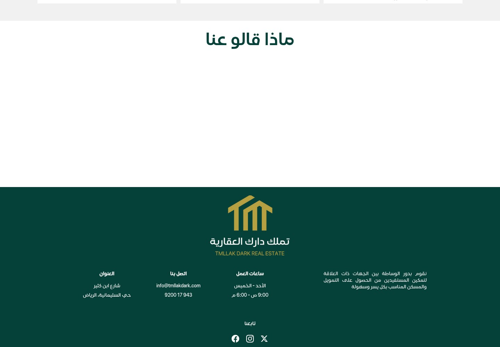
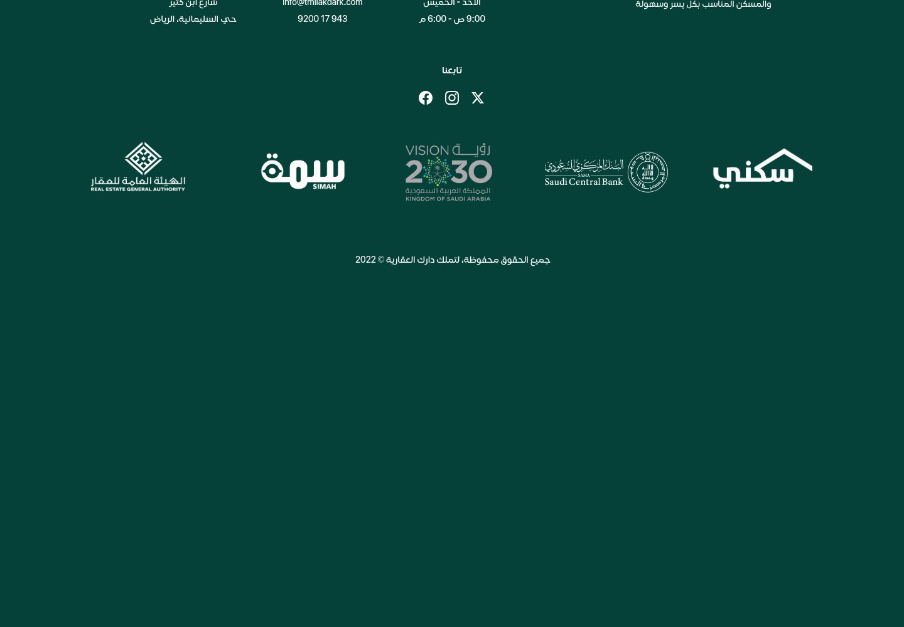
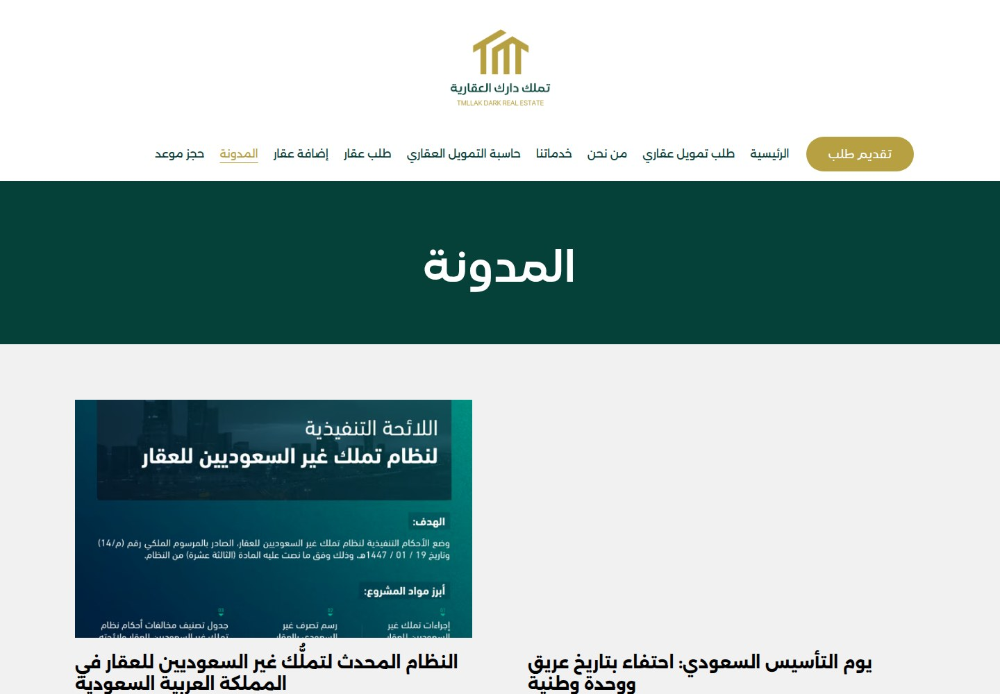
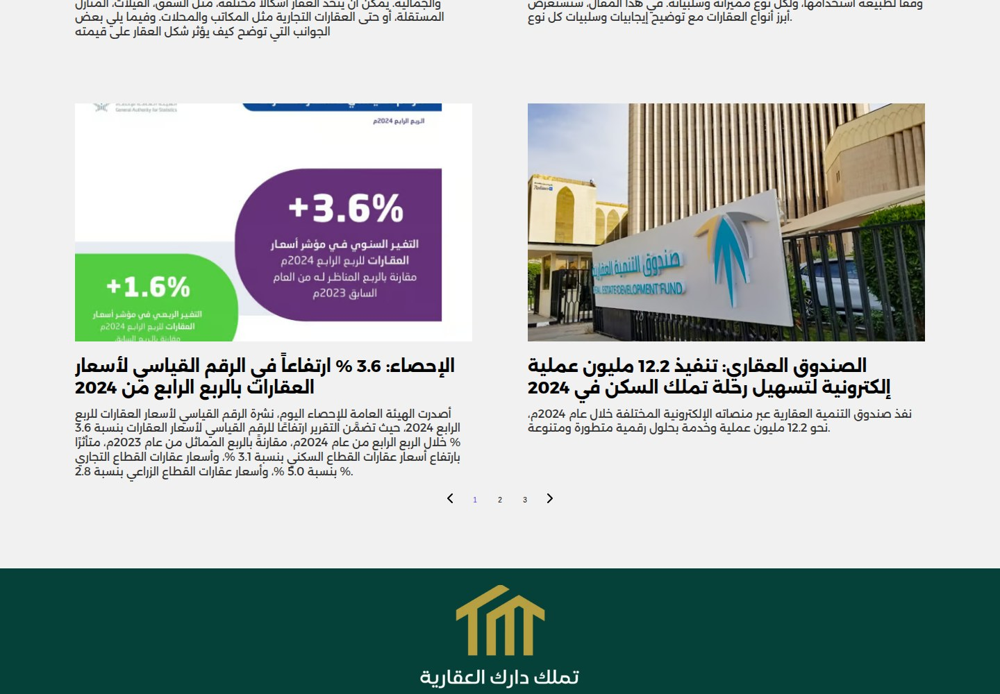
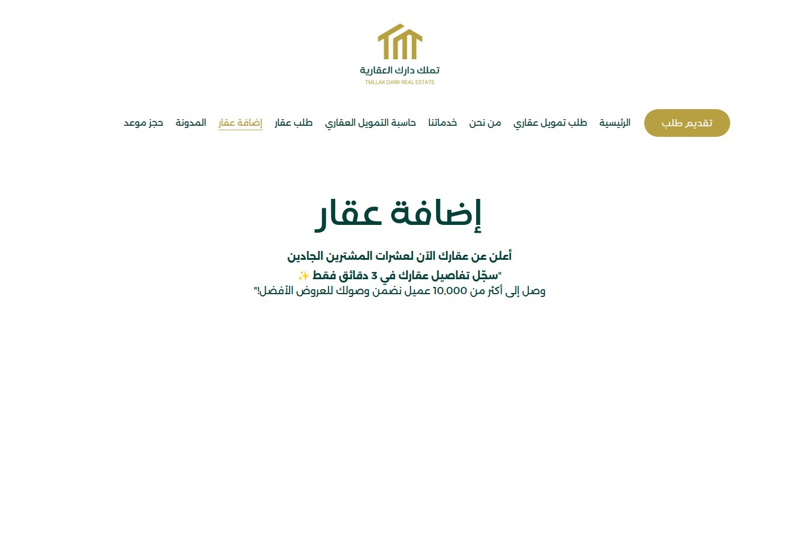
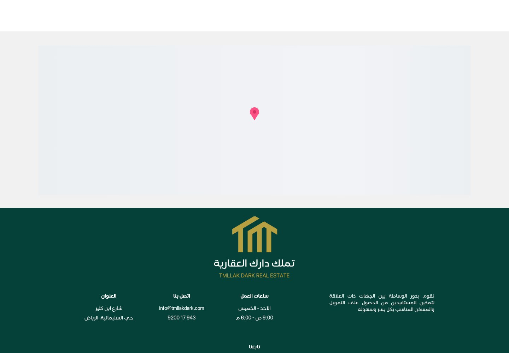

Tmllak Dark
Make your homeownership dream closer.

WHAT IT IS
Real-estate finance brokerage and mortgage-financing services
The Arabic-language site presents the business as a Saudi real-estate finance intermediary offering home-finance brokerage and related financing programs, and collecting visitor requests for financing or a desired property. It advertises a financing-comparison calculator, but the calculator page inspected showed explanatory copy without visible input controls or results. No property catalog was observed on the inspected routes.
This case study documents what the linked website presents. Individual contribution to this project has not been confirmed.
WHAT THE WEBSITE OFFERS
- Homepage/about copy identifies the company as a real-estate finance intermediary seeking to connect clients with suitable financing and housing (home and /mn-nhn).
- Services page describes mortgage finance for purchasing or building a home, for individuals and businesses (/khdmatna).
- Services page describes property-secured financing and refinancing mortgaged property (/khdmatna).
- Services page describes self-build and construction-completion finance (/khdmatna).
- Services page promotes combining salary with housing support and gives eligibility-related thresholds in its copy; these are site claims, not independently verified program terms (/khdmatna).
- Services page promotes point-of-sale financing for businesses and claims preliminary approval within two working days; this timing is marketing copy, not independently verified (/khdmatna).
- A mortgage-finance request page visibly has fields for full name, mobile number and requested service, plus a submit button; no form was submitted (/tlb-tmwyl-aqary).
- The property-request page visibly invites visitors to request a suitable property and shows fields including full name, mobile, property type, property value and city, plus a submit button; no form was submitted (/tlb-aqar).
VISITOR JOURNEY
From the homepage, select the prominent application CTA or the ‘Arabic text Arabic text Arabic text’ navigation link to reach the mortgage-finance request form; visible fields include name, mobile and requested service. The form was not submitted.
AUTHENTIC SCREEN CAPTURES · 11
Inside the experience.
Genuine, distinct screen captures supplied for this project. No screenshots have been fabricated or duplicated.








